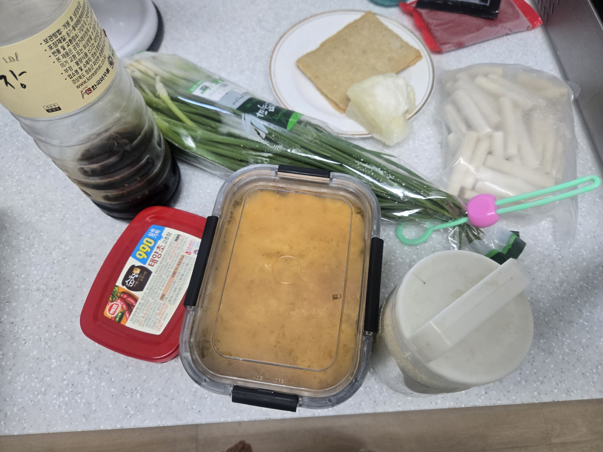
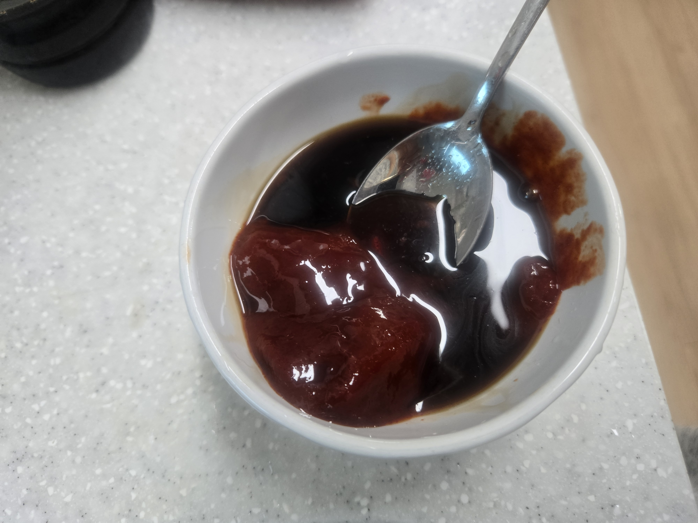

01
SOAK THE RICE CAKES
Soak the rice cakes in water before cooking.

My tteokbokki recipe
START ↓INGREDIENTS
Rice cakes
Fish cakes
Cabbage
Green onions
3 tbsp gochujang
1 tbsp soy sauce
1 tbsp sugar
500 ml water

01
Soak the rice cakes in water before cooking.
02
Put the rice cakes, fish cakes, and cabbage into a pan.

03
Mix 3 tablespoons of gochujang, 1 tablespoon of soy sauce, and 1 tablespoon of sugar.

04
Add 500 ml of water and the sauce to the pan. Mix everything together.

05
Cut the green onions and add them to the pan.

06
Let everything boil until the rice cakes are soft and the sauce gets thicker.

MY RESULT

I gave my recipe to two people and asked them to make their own tteokbokki.
PERSON 01
This is the tteokbokki made by the first person.
PERSON 02
This is the tteokbokki made by the second person.
MINE
Sena's work
Minji's work
SAME RECIPE,
DIFFERENT RESULTS.